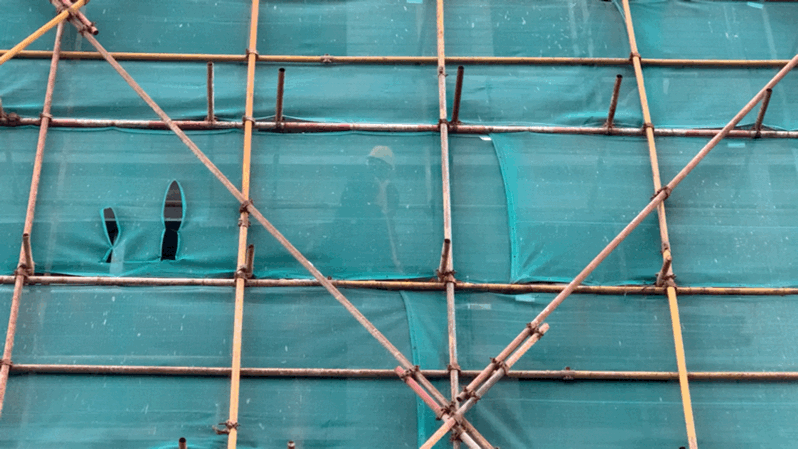

After several iterations, the Urban Keylight from my 7 in 7 project has been developed in to my final project.
This project is a discussion of the “urban green screen”, which contains two works. The main concept of this project is to present the existence and contribution of those people who living under the facade, who are ignored, marginalized and forgotten...
One thing I found it very interesting about this project is that while working on it, I myself was experiencing my own odyssey, the work flow of this project is just like a construction site saga. This construction site and my work iterate simultaneously.
All my information and materials are collected in these three places.
Location：Outside the construction site
I got the idea of how the safety net looks alike the green screen in film industry when I walked pass the construction site near my apartment building. Under the facade of the safety net, I saw the shadow of workers, the vision was quite blurry yet it immediately evoked my interest.
Location：Inside the construction site
Several days after my little discovery, I decided to sneak into the construction site and try to get a piece of safety net for further research. (As a loyal player of the Metal Gear series, I chose to sneak in at about 23:00pm in the evening. However, my skills are obviously not as good as Solid Snake in the game. I got caught by a security guard almost as soon as I entered the construction site...)
The second day, I went to the construction site again, and found the security guard who caught me, offically asked him for a favor.
Mr. Wu cutting a piece of safety net for me
Location：Heguyuan Dumpling Restaurant
In order to thank Mr. Wu's kindness, I asked him for dinner in a nearby dumpling restaurant. We chat a little bit and he told me some stories about their life as build labourer...
1. He works 12 hours per day, one day off per week.
2. Their dormitories are rebuild from containers, air-conditioned but the temperature is still very low at night.
3. Per capita income is low, but most workers are satisfied with it.
4. Most of them come from other places, especially the economically underdeveloped areas in China.
5. Wu wanted to go to college, but he had to make money to support his family.
6. Wu was cheated of RMB 12000 by the person in charge of the previous construction site.
A digital work to present the process of labors been erased in our city
The Erasion, 2020, Desktop documentary, Digital File, 2'41''
A projection installation work to bring them back physically
All materials for installation are collected from the constrution site
1. Fertilizer bag (for paving and loading cement)
2. Discarded gloves (obtained in the trash can)
3. Old twine(obtained in the trash can)
4. The remaining safety net of the warehouse
5. Tape with construction slogan on it
6. A strange abandoned green metal net
7. A nail gun (borrowed from the construction site)
The work flow of the installation
Dec 2020, B102, Academy of Arts & Design, Tsinghua University
Prejector testing, Real-time image shot from construction site
Dec 2020, F1 Central exhibition hall, Academy of Arts & Design, Tsinghua University
The Recollection, 2020, installation view, 300 x 300 x 200 cm
photograph by Xintong Wang in Dec 2020, F1 Central exhibition hall, Academy of Arts & Design, Tsinghua University